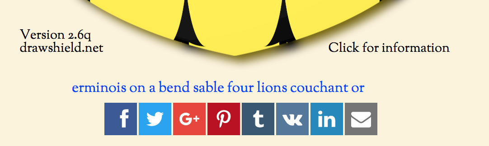

You have worked through all the bugs and frustrations of DrawShield, agonised over placement and tincture, lingered over your choice of shield shape and, finally, you are happy with your creation! Now you want to share it with the world (or perhaps just keep it privately in your own collection. What can you do?
Firstly, check out the previous page Working with Files to see how you can save the blazon and the resulting image for your own use. You are of course free to use the images and blazons and share them however you want (subject to local laws if your are using a coat of arms that is registered to someone through your relevant heraldic authority - DrawShield images are provided for education and informaton only and is not evidence of ownership).
If you want to share your shield in such a way that your correspondents can easily make their own changes the easiest way to this is to copy the URL link below your drawn shield. This is a properly formatted URL which will back to the create page with your blazon copied to the edit area and the shield drawn automatically. Your correspondent can then modify your blazon or download their own images.
Finally, to make things even easier I have added the Social Share kit, which is located below the drawn image. This allows you to easily share your blazon with various social networks, or by e-mail. What is actually shared is the URL link from below the shield, rather than the shield image. Obviously you will need a login on the chosen network to complete the sharing action.
And don't forget that you can also share your design with your fellow DrawShield users simply by clicking on the "Submit to Gallery" button!